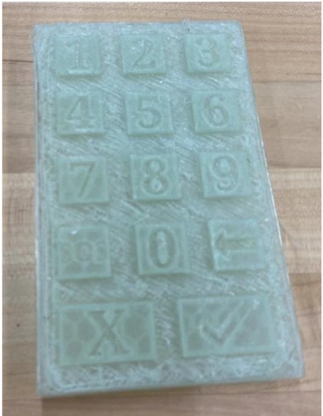

Alongside my project teammates, I designed and programmed an underwater diving interface in Unity3D as part of a project for my Introduction to Human-Computer Interaction class at UChicago. Below is a demonstration of the project in Unity3D:
The goal of this interface was to make a well-designed Augmented Reality interface that adapted to underwater conditions. The interface was divided into two components: a Heads Up Display (HUD) and an arm interface. Ultimately, the interface is meant to be used on the Oculus Quest 2.
The HUD displays vital statistics, e.g. the diver’s oxygen level, arm interface battery level, time spent underwater, etc.
The arm interface allows the diver to interact with the other components of the AR landscape, in particular making and receiving calls from virtual “crewmates”. Certain numbers on the keypad are mapped to each crewmate, and when pressed and held, a card with the crewmate’s information appears on the bottom of the HUD.
We even 3D-printed a corresponding prototype for the arm interface!
